Chapter 7 應用篇_探索性資料分析
所謂探索式資料分析(Exploratory data analysis, EDA)，是在做統計分析前，利用資料本身的特性、分布等，進行描述、簡單統計、以及視覺化呈現，目的是為了更了解資料，可以觀察初步發現並排除資料有可能的錯誤，接下來再進一步用進階統計做分析(以下部分內容參考1、參考2講義)
而探索式資料分析主要可以分成兩方面:
1.對於單變項/雙變項的初步描述統計、交叉表或相關
2.對整體資料或上述的簡單統計進行視覺化
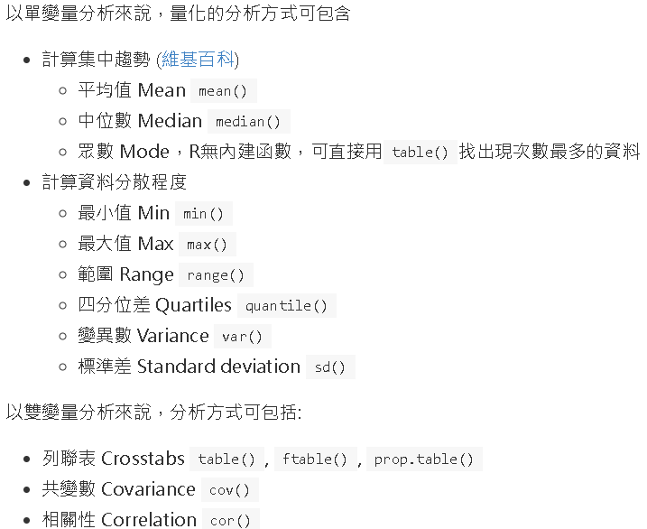
7.0.1 前置準備
library(tidyverse) ## 大部分的資處工具(包含ggplot2套件)
library(data.table) ## 高效能資處工具
library(DescTools) ## 初步描述統計
library(sjmisc) ## 設置缺失值
library(sjlabelled) ## 上標籤用
## 讀取上一章節處理好的資料
R_use_analysis <- readRDS("data/R_use_analysis")7.1 資料視覺化簡略介紹 ggplot2
在進入探索性分析前，需要簡單介紹一下R語言當中資料視覺化的工具，
R語言當中有內建的基本簡單作圖，但更加常用與更廣為推薦的是使用Hadley Wickamn所創建的ggplot2套件，而ggplot2套件功能的豐富，也是R語言相較於其他軟體資料視覺化的功能強大的地方，
但接下來只會先對於ggplot2套件做非常粗略的介紹，目的是為了可以簡單呈現接下來的探索性資料分析，進一步的美編或細節相關調整等複雜的內容則不會介紹，
有興趣者可以進一步查看ggplot2 cheat sheet、參考1、參考2、參考3、參考4
另外再更進階的部分也有像是ggplot2加上地圖、互動式的資料視覺化……等其他呈現方式
使用ggplot2作圖的一般步驟:參考3
- 準備好需要使用且清理好的資料
- 將資料輸入進
ggplot()函數中，並設定相關使用變項所對應(aesthetics)的座標軸、顏色、形狀…… - 再來選擇適合的圖形類型、使用
geom_xxx()相關函數(xxx需輸入對應圖形，例如geom_point()表示散佈圖) - 將
ggplot()函數用+與geom_xxx()相關函數做連結，此時已經可以作圖 - 接著是設定一些細節部分，像是標籤、調整位置……等，依樣用
+連結
當然上述只是簡單步驟，實務上還是有蠻多調整上的細節，ggplot2 cheat sheet，有更多調整的函數，其他也有各種樣式可供選擇
整體大致簡單結構
- ggplot
p <- ggplot(data = 使用資料,
mapping = aes( 维度 = 變項名稱, ## 像是想設定y軸為duty_child，y = duty_child
维度2 = 變項名稱2, ...)- ggplot的結果 + geom_ + 其他設定
p + geom_圖形類型(...) + ## 使用哪種圖形、並做進階設定
scale_對應座標_顯示設定(...) + ## 座標相關設定
labs(...) ## 標籤相關設定7.2 簡單呈現探索式資料分析
(下列接續的分析只是挑選變項來示範操作，可能兩者並沒有太多關係或意義)
在呈現探索式資料分析前，我們可以再一次整體瀏覽一下清理好的資料，
利用skimr套件可以整體查看分析資料各個變項的狀況(細節可再設定)，
輸出結果呈現三個表，
- 第一個整理出資料名稱、樣本數、變項數、以及幾個類別/數值變項
- 第二個整理出類別變項的資訊、包括遺漏值、樣本數、幾個類別與類別的資訊
- female(性別)、area_g4(居住地區四類)、fitness(有無塑身意願)
- 第三個整理出數值變項的資訊、包括遺漏值、數值變項的初步描述資訊
- age(年齡)、bmi、score
library(skimr)## skim(資料, 選擇要查看變項，沒有設定則是全部)
skim(R_use_analysis,-id) |> print()## ── Data Summary ────────────────────────
## Values
## Name R_use_analysis
## Number of rows 100
## Number of columns 7
## _______________________
## Column type frequency:
## factor 3
## numeric 3
## ________________________
## Group variables None
##
## ── Variable type: factor ───────────────────────────────────────────────────────
## skim_variable n_missing complete_rate ordered n_unique
## 1 fitness 0 1 FALSE 2
## 2 female 0 1 FALSE 2
## 3 area_g4 0 1 FALSE 4
## top_counts
## 1 0: 63, 1: 37
## 2 女: 52, 男: 48
## 3 南區: 35, 中區: 27, 北區: 25, 東區: 13
##
## ── Variable type: numeric ──────────────────────────────────────────────────────
## skim_variable n_missing complete_rate mean sd p0 p25 p50 p75 p100
## 1 age 0 1 47.2 12.0 18 39 50.5 57 65
## 2 score 0 1 73.7 15.8 41 61 76 88 99
## 3 bmi 0 1 23.9 3.58 17.2 21.3 24.0 26.2 35.1
## hist
## 1 ▂▂▆▆▇
## 2 ▃▆▅▇▇
## 3 ▅▇▇▂▁7.2.1 單一類別變項
以性別(female)為例，呈現男女性的次數分配
查看次數分配
- 使用直接計算方式
R_use_analysis |>
count(female) |> ## count 計算樣本數
mutate(
female_pct = n / sum(n) ## 計算出百分比
)## female n female_pct
## 1 男 48 0.48
## 2 女 52 0.52- 使用
table()函數
table(R_use_analysis[["female"]])##
## 男 女
## 48 52table(R_use_analysis[["female"]]) |>
prop.table()##
## 男 女
## 0.48 0.52接著也可以用長條圖先來呈現(以下僅為簡單粗略呈現，若要美化則須再調整)
畫圖(長條圖)呈現男女分別樣本數
- 先建立一個次數分配表
d_female <- R_use_analysis |>
count(female) |>
mutate(
pct = n / sum(n) ## 計算百分比
)- 畫長條圖呈現男女分別次數
ggplot(d_female, aes(x = female, y = n)) +
geom_col() ## geom_col()是長條圖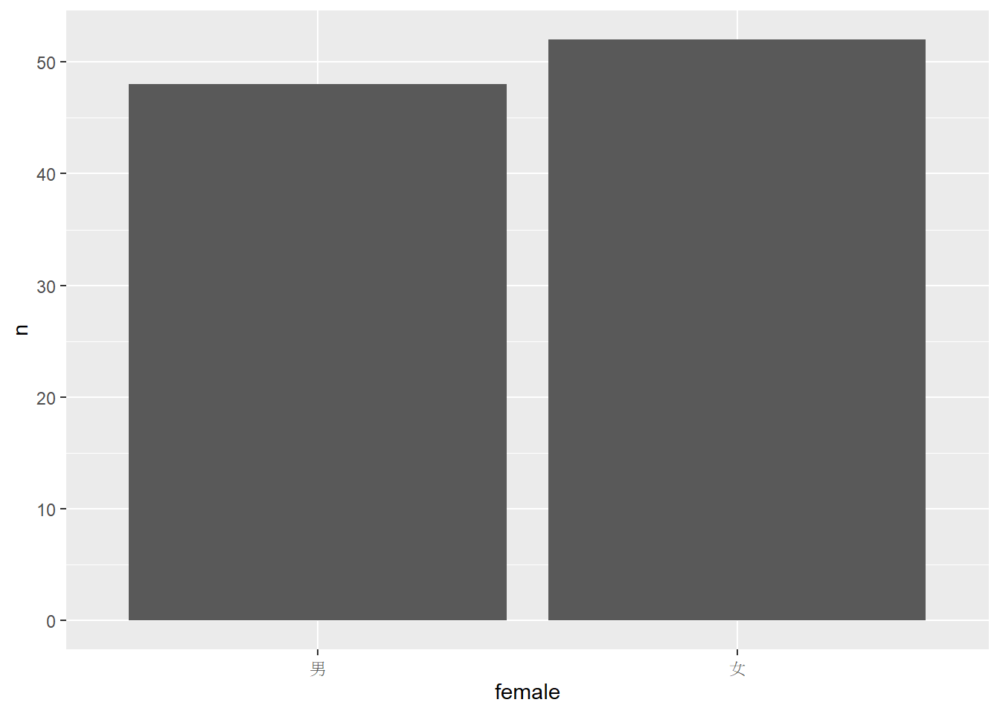
- 畫長條圖呈現男女分別百分比
ggplot(d_female, aes(x = female, y = pct)) +
geom_col() +
scale_y_continuous(
name = "Percent",
labels = scales::percent)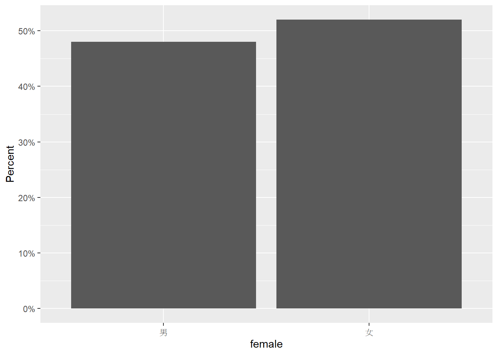
可以看到男性的樣本為48筆、佔約48%，女性的樣本稍多一點為52筆、佔約52%。
7.2.2 單一數值變項
以bmi為例，呈現描述統計
描述統計
- 使用summary函數
summary(R_use_analysis[["bmi"]])## Min. 1st Qu. Median Mean 3rd Qu. Max.
## 17.21 21.32 24.01 23.94 26.16 35.11- 若只想看平均數也可以直接指定mean
R_use_analysis |>
summarize(mean = mean(bmi))## mean
## 1 23.93701接著也可以用直方圖、折線圖或盒形圖先來呈現(以下僅為簡單粗略呈現，若要美化則須再調整)
- 直方圖呈現
ggplot(R_use_analysis, aes(x = bmi)) +
geom_histogram() ## geom_histogram()是直方圖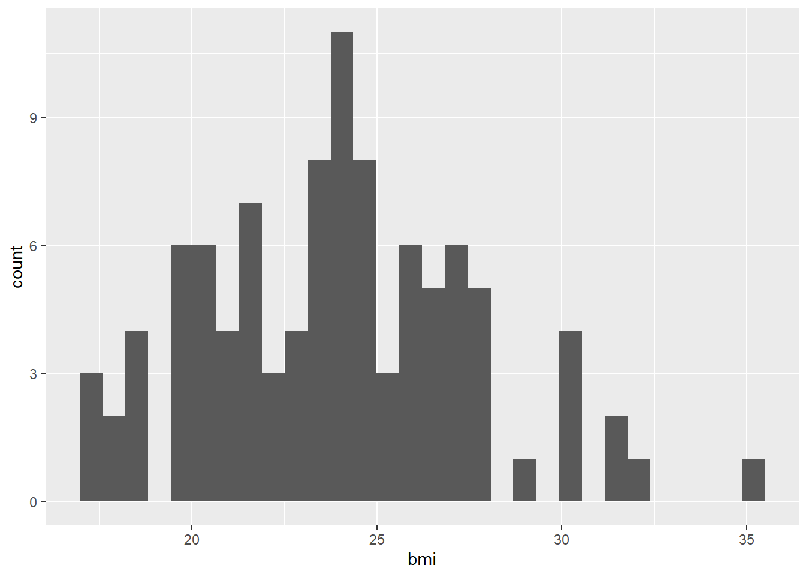
- 折線圖呈現
ggplot(R_use_analysis, aes(x = bmi)) +
geom_freqpoly(bins = 30) ## geom_histogram()是折線圖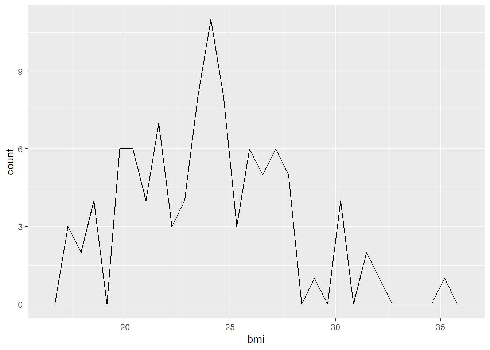
- 盒形圖呈現
ggplot(R_use_analysis, aes(x = "", y = bmi)) +
geom_boxplot() + ## geom_boxplot()是折線圖
labs(x = "")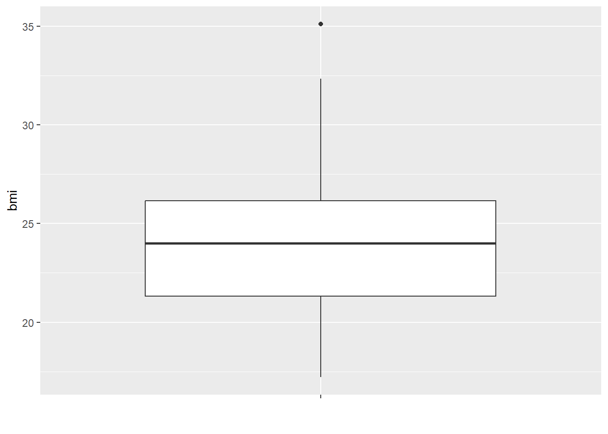
可以看到平均bmi約落在23.94左右，最小為17.21、最大為35.11。
7.2.3 兩個類別變項
查看性別(female)與塑身意願(fitness)的分布，做成交叉表的方式呈現
交叉表
- 用計算方式
d_female <- R_use_analysis |>
count(female, fitness) |>
group_by(female) |> ## 以female做分組
mutate(pct = n / sum(n)) |>
ungroup()
d_female## # A tibble: 4 × 4
## female fitness n pct
## <fct> <fct> <int> <dbl>
## 1 男 0 32 0.667
## 2 男 1 16 0.333
## 3 女 0 31 0.596
## 4 女 1 21 0.404- 使用
table()函數
with(R_use_analysis, table(
female, fitness
))## fitness
## female 0 1
## 男 32 16
## 女 31 21- 使用
CrossTable()函數
with(R_use_analysis, gmodels::CrossTable(
female, fitness
))## Registered S3 method overwritten by 'gdata':
## method from
## reorder.factor DescTools##
##
## Cell Contents
## |-------------------------|
## | N |
## | Chi-square contribution |
## | N / Row Total |
## | N / Col Total |
## | N / Table Total |
## |-------------------------|
##
##
## Total Observations in Table: 100
##
##
## | fitness
## female | 0 | 1 | Row Total |
## -------------|-----------|-----------|-----------|
## 男 | 32 | 16 | 48 |
## | 0.102 | 0.174 | |
## | 0.667 | 0.333 | 0.480 |
## | 0.508 | 0.432 | |
## | 0.320 | 0.160 | |
## -------------|-----------|-----------|-----------|
## 女 | 31 | 21 | 52 |
## | 0.095 | 0.161 | |
## | 0.596 | 0.404 | 0.520 |
## | 0.492 | 0.568 | |
## | 0.310 | 0.210 | |
## -------------|-----------|-----------|-----------|
## Column Total | 63 | 37 | 100 |
## | 0.630 | 0.370 | |
## -------------|-----------|-----------|-----------|
##
## 接著也可以用堆疊長條圖、並列長條圖先來呈現(以下僅為簡單粗略呈現，若要美化則須再調整)
- 並列長條圖
ggplot(d_female, aes(
x = fitness, fill = female, y = pct)) +
geom_col(position = "dodge") ## "dodge" 指定堆疊並列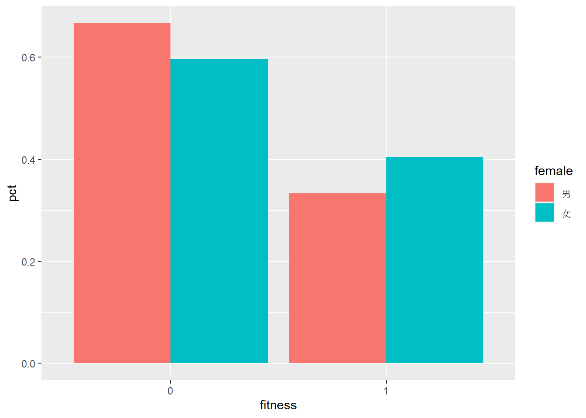
- 堆疊長條圖
ggplot(d_female, aes(
x = fitness, fill = female, y = n)) +
geom_col(position = "stack") ## "stack" 指定堆疊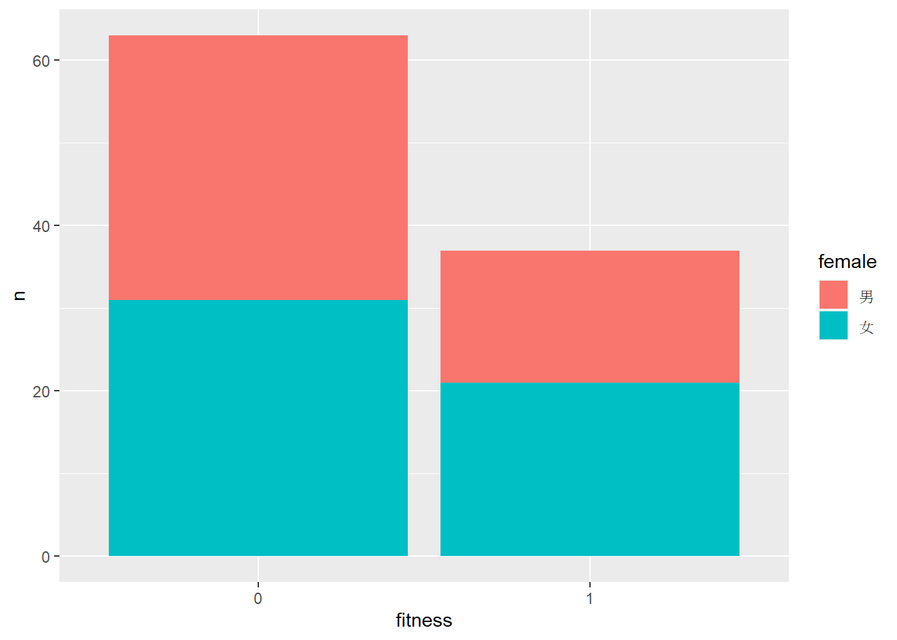
可以看到整體而言，男性平均有66.7%沒有塑身意願、33.3%有塑身意願，女性平均有59.6%沒有塑身意願、40.4%有塑身意願，女性相較於男性稍微有多一點的塑身意願。
7.2.4 兩個數值變項
查看年齡(age)和bmi的影響關係，計算兩者相關係數
- 使用
cor()函數，呈現相關係數
R_use_analysis |>
summarize(cor = cor(age, bmi, use="complete.obs"))## cor
## 1 0.2270768兩者的相關係數約為0.23，算是低度正相關
接著也可以用散布圖、並加上預測線先來呈現(以下僅為簡單粗略呈現，若要美化則須再調整)
- 散布圖
ggplot(R_use_analysis, aes(x = age, y = bmi)) +
geom_point() ## geom_point()是散布圖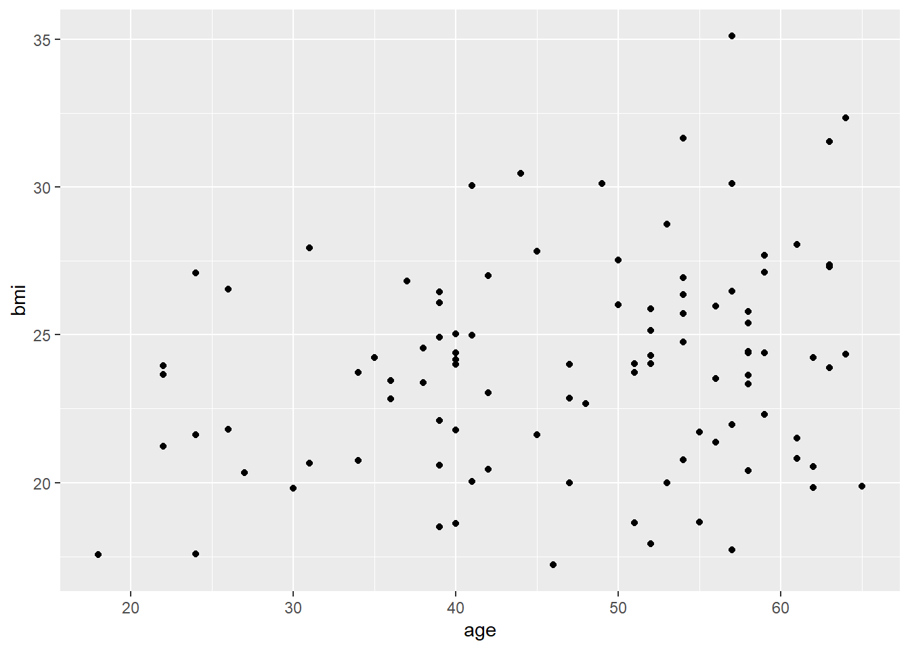
- 加上預測線
ggplot(R_use_analysis, aes(x = age, y = bmi)) +
geom_point() +
geom_smooth(method = "glm")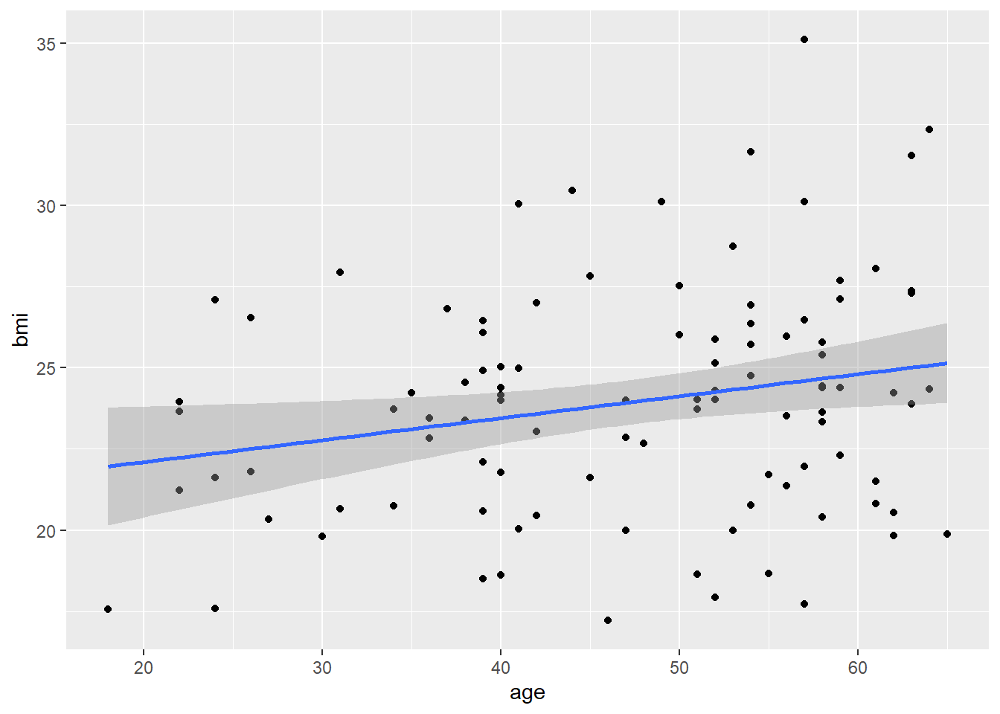
7.2.5 一個類別一個數值變項
查看不同性別(female)的bmi差異
分組描述統計
R_use_analysis |>
group_by(female) |> ## 以female做分組
summarize(mean = mean(bmi))## # A tibble: 2 × 2
## female mean
## <fct> <dbl>
## 1 男 25.6
## 2 女 22.4接著也可以用分組盒形圖、分組折線圖線先來呈現(以下僅為簡單粗略呈現，若要美化則須再調整)
- 分組盒形圖
ggplot(R_use_analysis, aes(
x = female, y = bmi)) +
geom_boxplot()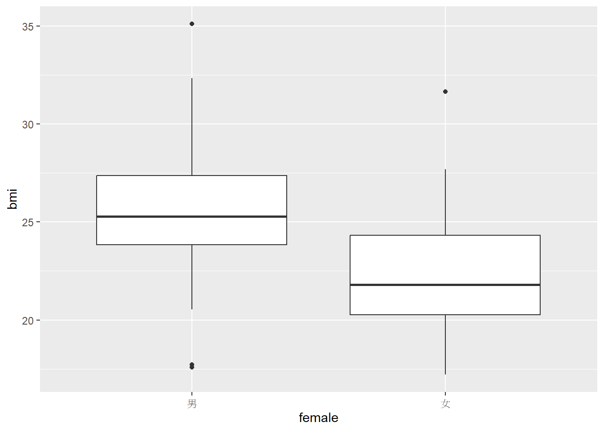
- 分組折線圖
ggplot(R_use_analysis, aes(
x = bmi,
color = female)) +
geom_freqpoly()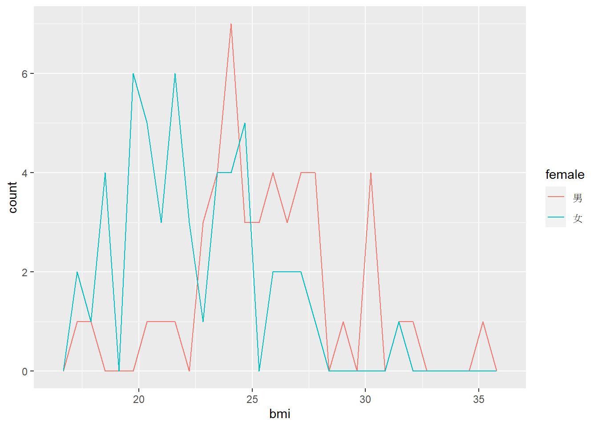
可以看到男性的bmi平均為25.63，女性的bmi平均為22.37，男性的bmi略大於女性。
7.2.6 兩個數值變項用類別變項分組
查看不同性別(female)，如何影響對於年齡(age)對於bmi的影響
分組相關係數
R_use_analysis |>
group_by(female) |> ## 以female做分組
summarize(cor = cor(age, bmi, use="complete.obs"))## # A tibble: 2 × 2
## female cor
## <fct> <dbl>
## 1 男 0.168
## 2 女 0.302接著也可以用按照性別分組呈現散布圖、並加上預測線先來呈現(以下僅為簡單粗略呈現，若要美化則須再調整)
- 分組散布圖
ggplot(R_use_analysis, aes(x = age, y = bmi)) +
geom_point() +
facet_wrap(~ female) ## 按照性別分組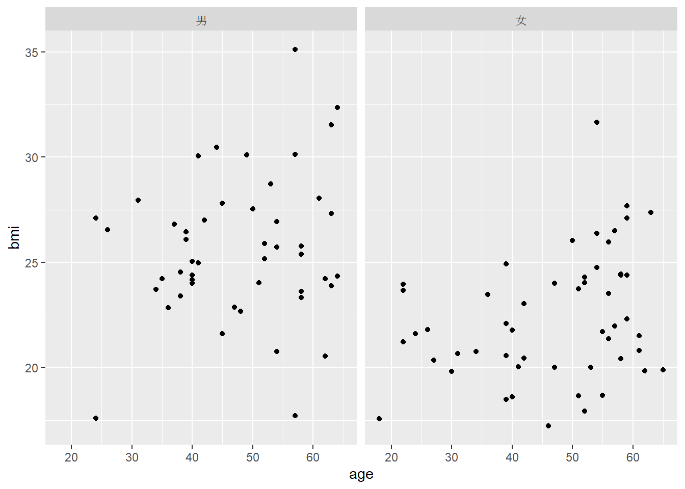
- 加上預測線
ggplot(R_use_analysis, aes(x = age, y = bmi)) +
geom_point() +
geom_smooth(method = "glm") +
facet_wrap(~ female) ## 按照性別分組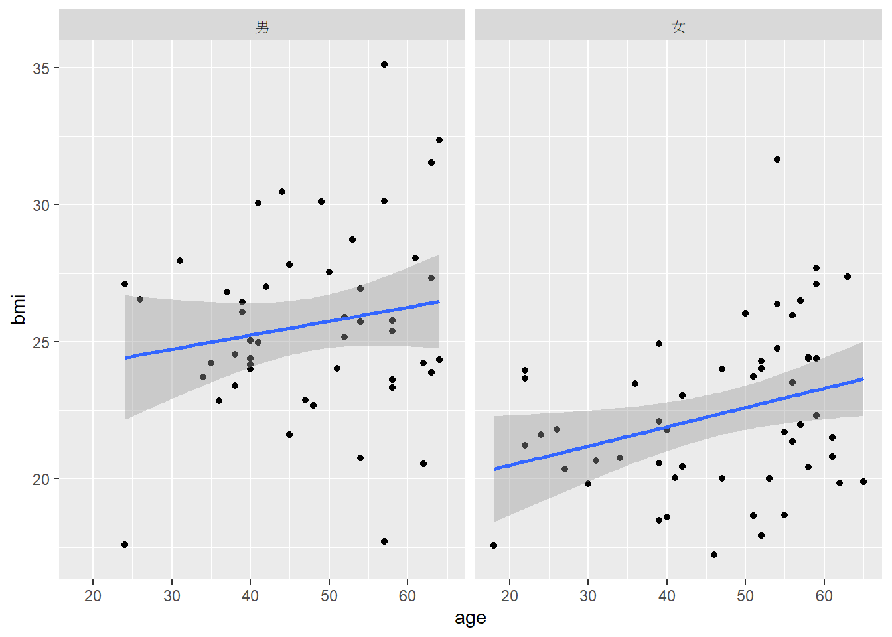
可以看到不管性別為何，年齡和bmi之間的關係都是低度的正相關，但女性(0.30)的影響似乎比男性(0.16)來的大。